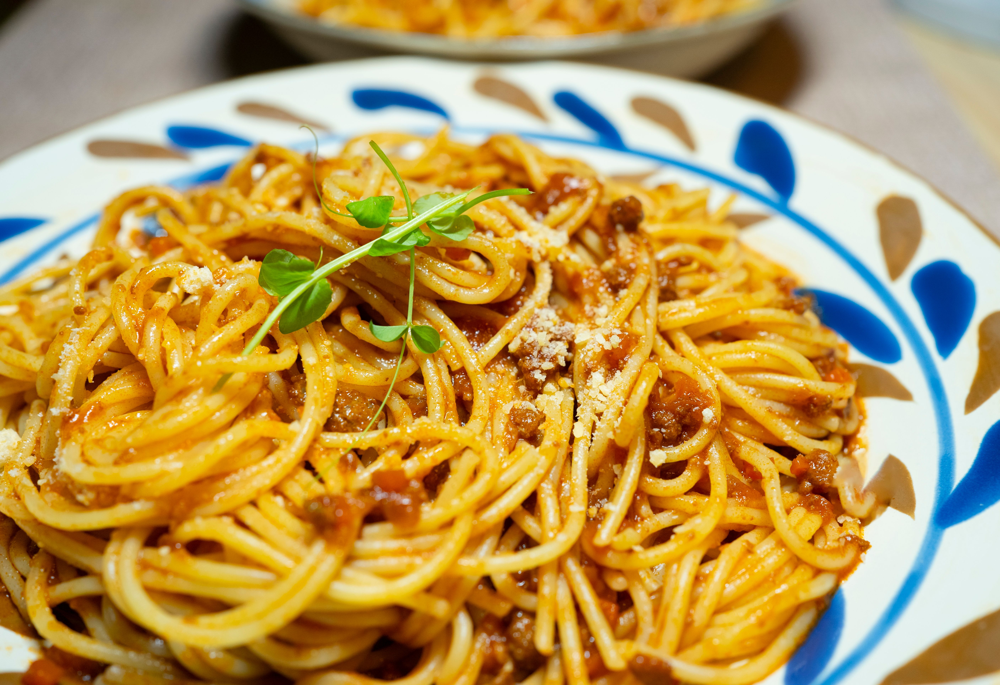

Home
Spaghetti

Description
This easy spaghetti Bolognese is a comforting Italian-inspired meal
made with ground beef, tomatoes, onion, and garlic. The rich, savory
sauce is simmered until flavorful and served over spaghetti with a
sprinkle of Parmesan cheese.
Ingredients
- 1 lb ground beef
- 12 oz spaghetti
- 1 small onion, finely diced
- 2 cloves garlic, minced
- 1 can (28oz) crushed tomatoes
- 2 tbsp tomato paste
- 1 tbsp olive oil
- 1 tsp dried oregano
- 1 tsp dried basil
- 1/2 tsp salt
- 1/4 tsp black pepper
- 1/2 cup grated parmesan cheese
Instructions
-
Bring a large pot of salted water to a boil and cook
the spaghetti according to the package directions.
-
While the pasta cooks, heat the olive oil in a large
skillet over medium heat.
- Add the diced onion and cook for 3-4 minutes until softened
- Add the garlic and cook for about 30 seconds
-
Add the ground beef and cook until browned, breaking it
apart with a spoon as it cooks.
- Stir in the tomato paste, curshed tomatoes, oregano, basil,
salt, and black pepper.
-
Bring the sauce to a gentle simmer and cook for
20-25 minutes, stirring occasionally.
- Drain the spaghetti and add it to the sauce, or serve
the sauce over the spaghetti.
- Top with grated parmesan and serve hot.